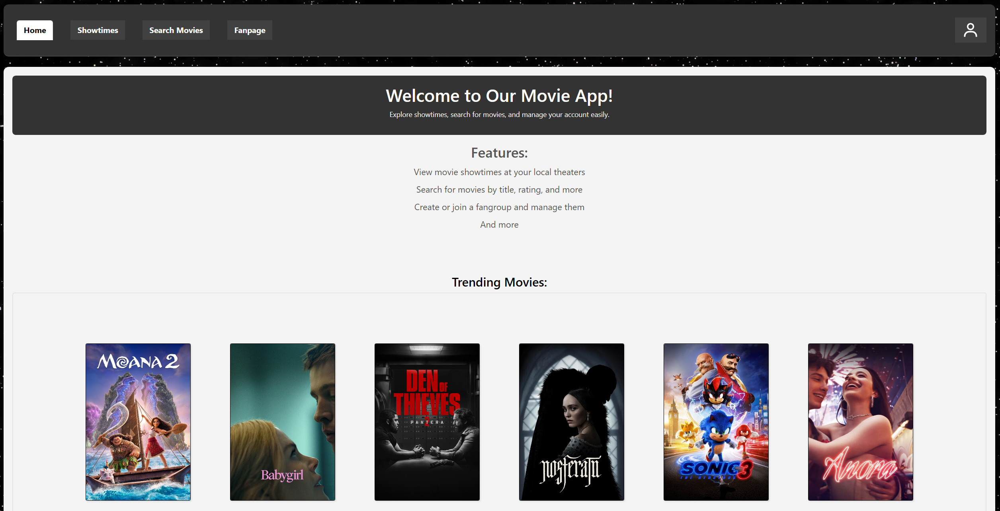

Speden spelit -nopeustesti
Tehtävänä oli rakentaa kuvaa muistuttava toteutus Arduino-mikrokontrollerista ja led-valoista, näyttäen tuloksia 7-segmenttinäytöltä. Valot syttyvät satunnaisesti ja pitäisi painaa valoa vastaavaa nappia (kuvasta poiketen oli valot ja napit erikseen).
Aina kun painetaan oikeaa nappia, lisätään yksi piste tulokseen ja näytetään se reaaliaikaisesti 7-segmenttinäytöllä.
Virtuaalinen pankkiautomaatti
Toteutimme kuvan mukaisen virtuaalisen pankkiautomaatti-simulaation, jossa tilille päästään RFID-lukijan avulla. Käyttöliittymä on tehty Qt Widgetillä ja tiedot haetaan MySQL-tietokannasta HTTP-pyyntöjen avulla.
Projektin Github: https://github.com/vsuho/Virtual-ATM-simul
Leffasivu
Toteutimme leffasovelluksen Reactilla, jossa voi muun muassa selata elokuvia erinäisillä kriteereillä. Sovelluksesta voi myös katsoa Finnkinon näytösaikoja, jotka haetaan Finnkinon APIsta.
Sovellukseen voi luoda oman tilin, jolla voi kirjoittaa esimerkiksi arvosteluja elokuville. Arvostelut ja käyttäjätiedot tallennetaan MySQL-tietokantaan. Backend tehtiin Node.js:llä.

Projektin Github: https://github.com/movieApp-19
Terveyssovellus
Toteutimme mobiilisovelluksen React Nativella ja Expolla, jossa on ominaisuutena askeleiden näyttäminen, unen ja liikunnan seuranta, BMI- ja kalorilaskuri, sekä ruokapäiväkirja, hyödyntäen Finelin APIa ravintotietojen saamiseen.
Tiedot tallennettiin Firestoreen.

Projektin Github: https://github.com/Mobile-development-R19/Health-app